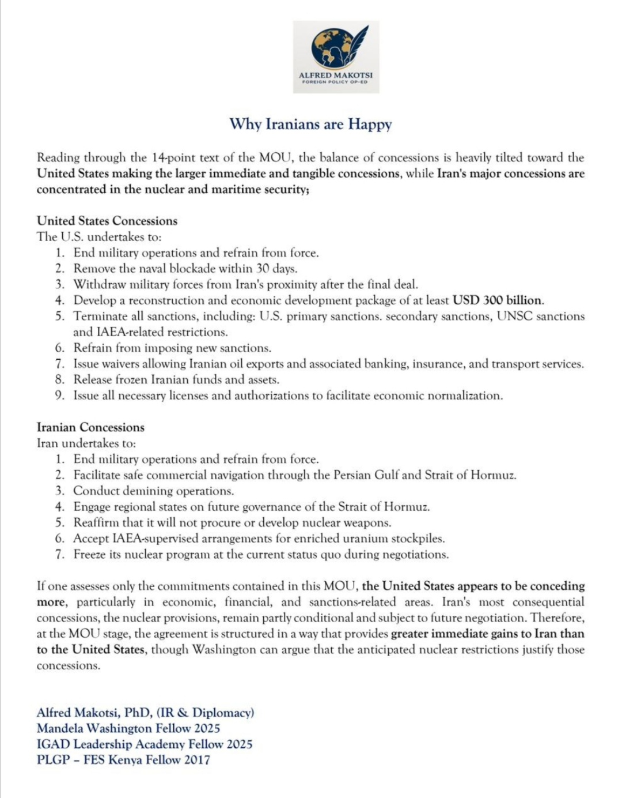
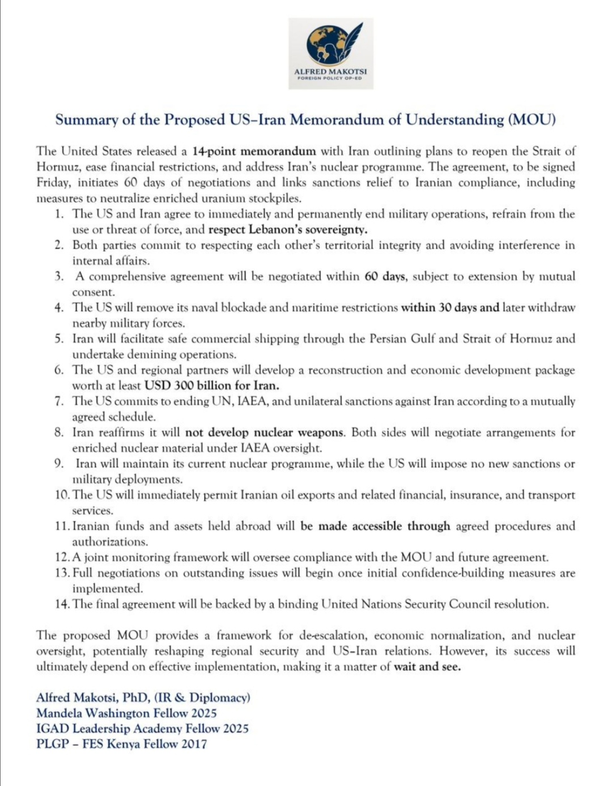

Policy Research & Analysis
Producing policy briefs, research reports, strategic forecasts, academic publications and diplomatic intelligence briefs, anchored by the Africa Foreign Policy Outlook annual report.
Afrocentric Institute for International Relations
Independent, Afrocentric research, strategic dialogue and policy leadership
shaping Africa's engagement with the world.
To produce high-quality policy research, facilitate strategic dialogue, and build diplomatic capacity that advances Africa’s voice and interests in global governance.
Our Vision
To become a leading African think tank shaping global debates on diplomacy, international relations, and foreign policy from an Afrocentric perspective.
Directed by Dr. Alfred Makotsi, DiploHouse Africa provides African-led strategic analysis and policy engagement for the international system.
Generating evidence-based analysis that informs continental and global policy.
Convening diplomats, policymakers and thought leaders for transformative dialogue.
Elevating African voices, perspectives and frameworks in international discourse.
What We Do
DiploHouse delivers African-led research, policy advice, public engagement and training to strengthen Africa’s role in global affairs.
Producing policy briefs, research reports, strategic forecasts, academic publications and diplomatic intelligence briefs, anchored by the Africa Foreign Policy Outlook annual report.
Delivering evidence-based recommendations to governments, regional bodies and diplomatic institutions through strategic briefings, policy proposals and advisory support.
Hosting conferences, closed-door dialogues, security roundtables and Track II forums that connect diplomats, scholars and business leaders.
Developing Diplomatic Leadership Fellowships, Young African Foreign Policy Scholars programs, internships and research mentorships for emerging African policy experts.
Offering media commentary, policy podcasts, webinars, public lectures and opinion commentary to shape informed debate on African diplomacy and global affairs.
Monitoring emerging security risks and producing early warning alerts and conflict prevention guidance through a dedicated diplomacy observatory.
Areas of Inquiry
Four interdisciplinary centres generating rigorous analysis across geopolitics, security, climate diplomacy and African foreign policy.
01
Analysing shifting power dynamics, great-power competition and Africa's strategic positioning in a multipolar world order.
Learn More →
02
Researching drivers of conflict, peacebuilding architecture and security sector reform across the African continent.
Learn More →03
Examining climate negotiations, digital sovereignty and emerging technologies as instruments of diplomacy and development.
Learn More →04
Evaluating African states' foreign policy orientations and their engagement with multilateral institutions and global governance frameworks.
Learn More →Knowledge Output
Timely, evidence-driven analysis at the forefront of African foreign policy, security and global affairs.

An analysis of how African nations can assert independent foreign policy positions amid intensifying great-power competition between the United States, China and emerging regional blocs.
Read More →
A comprehensive assessment of security dynamics in the Sahel and the adequacy of existing continental and international frameworks.
Read More →A forward-looking forecast of African leverage in climate negotiations and strategies for maximising the continent's influence.
Read More →Interrogating the implications of data colonialism and prescribing African-led frameworks for digital governance.
Read More →DiploHouse Africa's flagship annual publication surveying the foreign policy postures of 54 African states and continental trends.
Read More →Institutional Reach
The Minds Behind the Work
A distinguished community of scholars, diplomats and policy practitioners shaping African thought leadership.
Senior Research Fellow
Geopolitics & African Security Architecture
Former Director of Political Affairs at the African Union Commission with over 18 years in continental diplomacy.
Distinguished Fellow
Climate Diplomacy & Environmental Governance
Professor of International Environmental Law at the University of Ghana, lead author of three IPCC reports on Africa.
Visiting Expert
Multilateral Diplomacy & UN Reform
Former Permanent Representative of Ghana to the United Nations; advisor to three successive heads of state.
Research Associate
North Africa & Mediterranean Geopolitics
Specialist in North African security transitions with field research experience across Libya, Tunisia and Egypt.
Senior Research Fellow
West African Integration & ECOWAS
Leading authority on ECOWAS institutions and democratic governance in post-coup West African states.
Research Fellow
Southern African Development & Political Economy
Development economist focusing on how SADC institutional design shapes economic transformation in southern Africa.
Distinguished Fellow
Horn of Africa Security & Counter-terrorism
Strategic security analyst and former advisor to IGAD on countering violent extremism in the Horn of Africa.
Visiting Expert
Francophone Africa & France-Africa Relations
Political scientist charting the reconfiguration of France-Africa relations in the wake of the Sahel's military transitions.
Upcoming Engagements
High-level dialogues, public forums and academic convocations advancing African policy discourse.
Nairobi, Kenya
A landmark gathering of African foreign ministers, heads of mission and senior diplomats to chart the continent's multilateral priorities.
RegisterAccra, Ghana
A closed-door expert roundtable examining security trajectories in Mali, Burkina Faso and Niger following military governance transitions.
RegisterAddis Ababa, Ethiopia
Building a unified African negotiating position ahead of COP30, with particular focus on climate finance, loss and damage, and green industrialisation.
RegisterIn the Public Square
42 min
38 min
45 min
Get in Touch
Connect with our research team, explore partnership opportunities or enquire about our programmes.